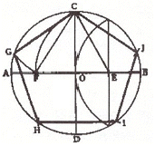
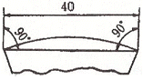
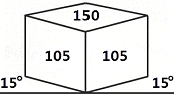

컴퓨터그래픽스운용기능사 (2015-07-19 기출문제)
1과목: 산업디자인 일반
1. 굿 디자인(Good Design)의 조건이 아닌 것은?
- 합목적성
- 심미성
- 종합성
- 독창성
(정답률: 75%)

2. 포장디자인(Package Design)의 주요 기능 아닌 것은?
- 보호성
- 생산성
- 명시성
- 환경성
(정답률: 62%)
3. 다음 중 객실 인테리어(Private interior)에 해당되는 것은?
- 기숙사의 침실, 교실
- 사무실, 병원의 병실
- 연구실, 나이트클럽
- 주택의 거실, 호텔의 객실
(정답률: 83%)
4. 제품디자인의 프로세스로 가장 적합한 것은?
- 계획- 분석 - 조사 - 평가 - 종합
- 조사- 분석 -계획- 평가 - 종합
- 계획 - 조사 - 분석- 종합 - 평가
- 조사 - 계획 - 분석 - 종합 - 평가
(정답률: 87%)
5. 질감에 대한 설명으로 틀린 것은?
- 빛에 의해 만들어지므로 명암효과에 따라 다르게 보일 수 있다.
- 명도의 대비나 시각적 거리감과 함께 표현된다.
- 물체의 무게와 안정감을 부여하는 기능이 없다.
- 촉각적 질감과 시각적 질감으로 나누어진다.
(정답률: 72%)
6. 일반적으로 유연성과 우아함, 부드러움과 운동감이 있으며 사람의 내면을 나타내는 선은?
- 자유곡선형
- 자유직선형
- 기하직선형
- 기하곡선형
(정답률: 84%)
7. 인테리어 실내공간의 기본적인 요소가 아닌 것은?
- 바닥
- 가구
- 벽
- 천장
(정답률: 92%)
8. 고객 분석 및 경쟁업자 분석을 하는 것을 다음 제품디자인 프로세스 중 어디에 속하는가?
- 제품 스케치
- 계획
- 드로잉
- 모델링
(정답률: 83%)
9. 디자인 과정 중에서 스케치의 역할이 아닌 것은?
- 기존의 형태를 모방한다.
- 아이디어를 빠르게 표현한다.
- 의도된 형태를 발견, 전개시킨다.
- 프레젠테이션을 통해 최종 디자인을 결정할 때 쓰인다.
(정답률: 50%)
10. 편집디자인의 요소로 가장 거리가 먼 것은?
- 타이포그래피
- 레이아웃
- 포토그래피
- 스토리보드
(정답률: 69%)
11. 디자인에서 최종적으로 생명을 불어 넣을 수 있는 요소는?
- 독창성
- 유행성
- 재료성
- 성실성
(정답률: 76%)
12. DM(Direct Mail)광고라고 볼 수 없는 것은?
- 폴더(Folder)
- 리플릿(leaflet)
- 포스터(poster)
- 카달로그(catalogue)
(정답률: 57%)
13. 마케팅의 원칙에 속하지 않는 것은?
- 수요전제의 원칙
- 판매촉진의 원칙
- 수요창조의 원칙
- 적정배분의 원칙
(정답률: 71%)
14. 다음 중 면에 대한 설명이 틀린 것은?
- 길이와 너비를 가진다.
- 공간을 구성하는 단위이다.
- 수직면은 동적이면서도 안정감을 준다.
- 넓이는 있으나 두께는 없다.
(정답률: 72%)
15. 원시인들이 사용하였던 흙의 사용 용도로 볼 수 없는 것은?
- 집을 짓는 재료
- 수렵용 도구
- 물을 담는 용기
- 종교적인 토우
(정답률: 80%)
16. 시각디자인의 주요 분야가 아닌 것은?
- 텍스타일 디자인
- 편집 디자인
- 일러스트레이션
- 패키지 디자인
(정답률: 51%)
17. 마케팅에 대한 설명 중 틀린 것은?
- 고객의 필요에 초점을 두어야 한다.
- 고객의 필요, 충족을 통해서 이익을 획득한다.
- 기업의 제품개발, 광고전개, 유통설계를 중심으로 한 활동이다.
- 소비자 중심에서 기업중심으로 가야 한다.
(정답률: 86%)
18. 실내디자인의 목적과 거리가 가장 먼 것은?
- 문화적, 경제적 측면을 고려한 합리적인 실내 공간 계획
- 기능적이고, 쾌적한 환경을 창조하기 위한 실내 공간 계획
- 독창적이고, 합리적인 공간으로 창조하기 위한 실내 공간 계획
- 기능적 설계요소보다 미적인 요소를 중시하는 실내 공간 계획
(정답률: 88%)
19. 다음 중 제품디자인의 영역이 아닌 것은?
- 가구 디자인
- 완구 디자인
- 자동차 디자인
- 디스플레이 디자인
(정답률: 88%)
20. 디자인과 건축분야에서 "형태는 기능을 따른다."라고 기능미를 처음 주장한 사람은?
- 루이스 설리반
- 프랭크 로이드 라이트
- 월리엄 모리스
- 월터 그로피우스
(정답률: 63%)
2과목: 색채 및 도법
21. 채도를 낮추지 않고 어떤 중간색을 만들어 보자는 의도로 화면에 작은 색점을 많이 늘어놓아 사물을 표사하려고 한 것에 속하는 것은?
- 가산혼합
- 감산혼합
- 병치혼합
- 회전혼합
(정답률: 79%)
22. 선의 종류 중 숨은선의 용도는?
- 물품의 보이는 외형을 표시하는 선
- 보이지 않는 부분의 형상을 표시하는 선
- 치수를 기입하는데 쓰이는 선
- 도형의 중심을 표시하는 선
(정답률: 86%)
23. 다음 그림은 무엇을 구하기 위한 것인가?

- 원주에 근사한 직선 구하기
- 원에 내접하는 정5각형 그리기
- 원에 내접하는 반원형 그리기
- 한 변에 주어진 정5각형 그리기
(정답률: 86%)
24. 도면에서 치수의 단위에 대한 설명으로 틀린 것은?
- 길이의 단위는 ㎝를 사용한다.
- 길이의 단위는 ㎜를 사용하나, 단위는 ㎜는 기입하지 않는다.
- 각도는 필요에 따라, 분, 초의 단위도 함께 사용할 수 있다.
- 각도의 단위는 도(˚)를 사용한다.
(정답률: 76%)
25. 자연광에 의한 음영 작도에서 화면에 평행하게 비칠 때의 광선은?
- 측광
- 배광
- 역광
- 음광
(정답률: 52%)
26. 다음은 무엇을 나타낸 도면인가?

- 현의 치수 기입 방법
- 반지름의 치수 기입 방법
- 원호의 치수 기입 방법
- 곡선의 치수 기입 방법
(정답률: 55%)
27. 색의 삼속성에 따라 분류하여 표현하는 색이름은?
- 관용색명
- 고유색명
- 순수색명
- 계통색명
(정답률: 51%)
28. 등각 투상도(isometric projection drawing)에서 등각축의 각도는?
- 45˚
- 90˚
- 120˚
- 150˚
(정답률: 82%)
29. 색채 공감각과 거리가 가장 먼 것은?
- 맛
- 냄새
- 촉감
- 대비
(정답률: 67%)
30. 오스트발트의 색입체에서 등가색환 계열에 관한 설명 중 잘못 된 것은?
- 링스타(ring star)라고 부른다.
- 20개의 등가색환 계열로 되어 있다.
- 이 계열 속에서 선택된 색을 모두 조화한다.
- 무채색을 축으로 배색량과 흑색량이 같은 등가색환 계열이다.
(정답률: 46%)
31. 영·헬름홀츠 지각설에서 주장한 3원색이 아닌 것은?
- Red
- Yellow
- Green
- Blue
(정답률: 80%)
32. 색체, 질감, 형태, 무늬 등이 어떤 체계를 가지고 점점 커지거나 강해져 동적인 리듬감이 생겨나는 것은?
- 스케일
- 비례
- 대비
- 점이
(정답률: 68%)
33. 다음 색상 중 후퇴, 수축색은?
- 노랑
- 파랑
- 주황
- 빨강
(정답률: 84%)
34. 색의 분류 중 무채색에 속하는 것은?
- 황토색
- 어두운 회색
- 연보라
- 어두운 회녹색
(정답률: 90%)
35. 안내표지의 바탕이 흰색일 때 멀리서도 인지하기 쉬운 문자의 색으로 가장 적합한 것은?
- 초록
- 빨강
- 파랑
- 주황
(정답률: 44%)
36. 투시도법의 기호와 용어가 틀린 것은?
- GP-기선
- PP-화면
- HL-수평선
- VP- 소점
(정답률: 60%)
37. 그림의 투상도는?

- 2등각 투상도
- 1소점 투시도
- 사투상도
- 2소점 투시도
(정답률: 69%)
38. 색채조화에 대한 연구를 통하여 이론을 제시한 사람이다. 관련이 없는 사람은?
- 레오나르도 다빈치
- 뉴턴
- 슈브륄
- 맥스웰
(정답률: 48%)
39. 어두워지면 가장 먼저 사라져서 보이지 않는 색은?
- 노랑
- 빨강
- 녹색
- 보라
(정답률: 68%)
40. 색료를 혼합해서 만들 수 없는 색은?(오류 신고가 접수된 문제입니다. 반드시 정답과 해설을 확인하시기 바랍니다.)
- 주황
- 노랑
- 녹색
- 남색
(정답률: 71%)
3과목: 디자인 재료
41. 완성된 원고를 인쇄하기 위해서는 정확한 색 지정이 중요하다. 다음 중 미국 색채 연구소에서 개발되어 세계적으로 통용되는 컬러 가이드는?
- 펜톤 컬러 가이드
- DIC컬러 가이드
- 오스트발트 색표집
- 한국표준 색표집
(정답률: 59%)
42. 에어브러시(air brush)에 관한 설명 중 틀린 것은?
- 거칠고 대담한 표현에 가장 적합하다.
- 공기의 압력을 이용해서 잉크나 물감을 내뿜어 그려진다.
- 사실적이고 환상적인 일러스트레이션 표현에 알맞은 기법이다.
- 가장 중요한 것은 컴프레서와 스프레이건의 취급법이다.
(정답률: 64%)
43. 도료의 구성성분이 아닌 것은?
- 안료
- 중합체
- 첨가제
- 향료
(정답률: 75%)
44. 아트지, 바리타지 등에 많이 쓰이는 가공지는?
- 변성 가공지
- 적층 가공지
- 도피 가공지
- 흡수 가공지
(정답률: 64%)
45. 특수 목적의 렌즈 중 꿈같은 환상적 분위기를 연출하는데 사용하는 것은?
- 중렌즈
- 마이크로렌즈
- 시프트렌즈
- 연초점렌즈
(정답률: 59%)
46. 안료와 접착제를 종이 표면에 발라 강한 광택을 입힌 것으로 원색판의 고급인쇄에 적합한 종이는?
- 모조지
- 아트지
- 갱지
- 켄트지
(정답률: 76%)
47. 열경화성 수지를 대표하는 플라스틱으로 절연성이 커서 전기 재료로 많이 사용되며 베이클라이트라고도 하는 수지는?
- 요소 수지
- 멜라민 수지
- 페놀수지
- 푸란수지
(정답률: 64%)
48. 다음 중 무기재료로 짝지어진 것은?
- 도자기, 플라스틱
- 유리, 피혁
- 금속, 유리
- 목재, 종이
(정답률: 71%)
4과목: 컴퓨터 그래픽스
49. 3차원 컴퓨터그래픽스에서 물체의 투명도를 조절할 수 있는 셰이딩 기법은?
- Transparency
- Bump
- Refraction
- Glow
(정답률: 64%)
50. 컴퓨터에 내장된 실제 RAM이 사용하려고 하는 프로그램의 권장 메모리보다 작을 때 취해야 할 옳은 방법은?
- Video Ram(비디오 램)을 증가시킨다.
- Hard Disk(내장 하드디스크) 용량을 증가시킨다.
- ROM(Read Only Memory)을 이용한다.
- Virtual Memory(가상메모리)를 사용한다.
(정답률: 68%)
51. 컴퓨터 모니터나 TV에서는 모든 컬러를 3개의 기본색으로 구성한다. 다음 중 기본색이 아닌 것은?
- Yellow
- Green
- Blue
- Red
(정답률: 83%)
52. 반사율과 굴절률을 계산하여 투명감과 그림자까지 완벽하게 표현하는 렌더링 기법은?
- 레이트레이싱 방식
- 셰이딩 방식
- 텍스쳐 매핑 방식
- 리코딩 방식
(정답률: 41%)
53. 컴퓨터그래픽스 파일 포맷에 대한 설명으로 틀린 것은?
- BMP : 마이크로소프트사에서 지원하는 파일포맷으로 압축방법을 사용하지 않는다.
- EPS : 포스트스크립트 형태의 파일 형식으로 비트맵 이미지와 벡터 그래픽 파일을 함께 저장할 수 있다.
- GIF : 사진이미지의 압축에 가장 유리한 포맷으로 정밀한 이미지 저장에 적합한 파일이다.
- PNG : JPG와 GIF의 장점만을 가진 포맷을 투명성과 관련된 알파채널에서 향상된 기능을 제공한다.
(정답률: 57%)
54. 작업도중 명령을 취소하고 싶을 때 쓰는 명령은?
- save
- Place
- Group
- undo
(정답률: 87%)
55. 컴퓨터그래픽스에 도입 효과에 대한 설명으로 가장 거리가 먼 것은?
- 다양한 대안의 제시가 비교적 쉽다.
- 여러 가지 수정이 용이하며 변형이 자유롭다.
- 컴퓨터그래픽 기기를 쉽게 익힐 수 있다.
- 정보들의 축척으로 나중에 다시 이용할 수 있다.
(정답률: 71%)
56. 다음 중 비트맵 파일 포맷이 아닌 것은?
- GIF
- PSD
- AI
- BMP
(정답률: 75%)
57. 움직이지 않는 배경그림 위에 투명한 셀로판을 올려놓고 한 컷, 한컷 촬영하는 기법은?
- 투광 애니메이션
- 컷 아웃 애니메이션
- 클레이애니메이션
- 셀 애니메이션
(정답률: 65%)
58. 인덱스 색상 모드에 관한 설명을 틀린 것은?
- 인터넷 데이터 포맷으로 널리 쓰이는 포맷 방식은 BMP포맷 방식이다.
- 원본 이미지의 색상이 표에 없으면 색상표에서 가장 근접한 색상으로 표시한다.
- 팔레트 색상을 제한하여 일정한 품질을 유지하면서 이미지의 파일 크기를 줄 일 수 있다.
- 256색을 사용하여 색상을 변환하고 이미지의 색을 저장한다.
(정답률: 40%)
59. 저해상도에서 곡선이나 사선을 표현할 때 생기는 계단현상을 완화하기 위해 사용하는 기법은?
- 모핑(Morphing)
- 앤티앨리어싱(Anti-aliasing)
- 스위핑(Sweeping)
- 미러(Mirror)
(정답률: 79%)
60. 컴퓨터에 관한 설명 중 잘못 된 것은?
- 컴퓨터에서 CPU는 사람 두뇌에 해당된다.
- CPU는 데이터의 연산 및 컴퓨터 각각의 부분을 제어하는 기능을 가지고 있다.
- 레지스터(Register)는 CPU의 임시 기억 장치로 컴퓨터의 중앙처리장치에서 사용되는 고속의 기억장치이다.
- 제어장치(Control Unit)에서 덧셈, 뺄셈 등과 같은 산술 연산과 AND, OR 등과 같은 논리 연산을 수행한다.
(정답률: 61%)